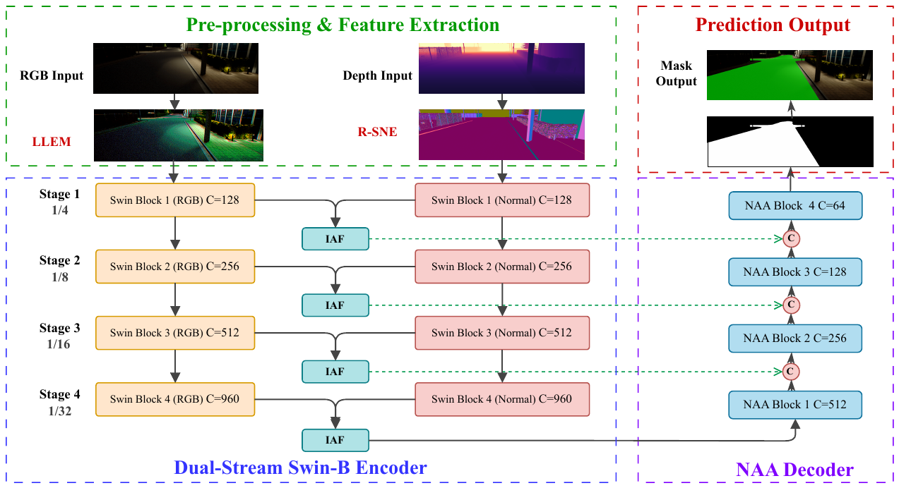
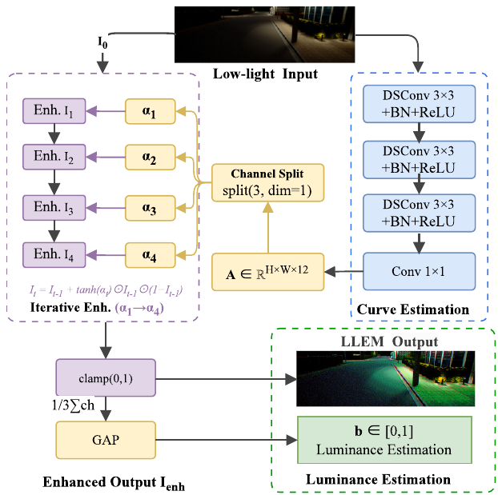
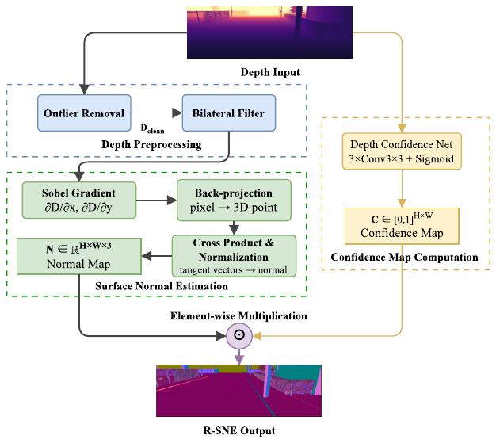
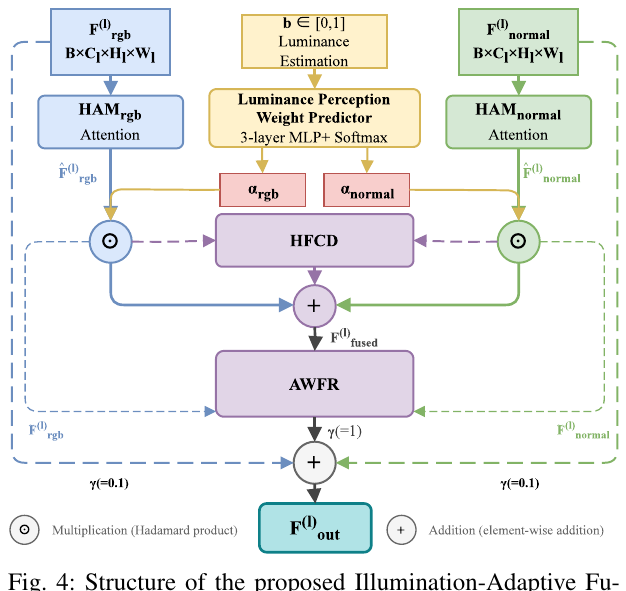
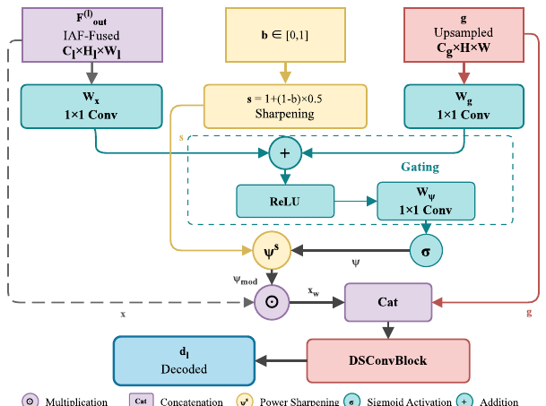
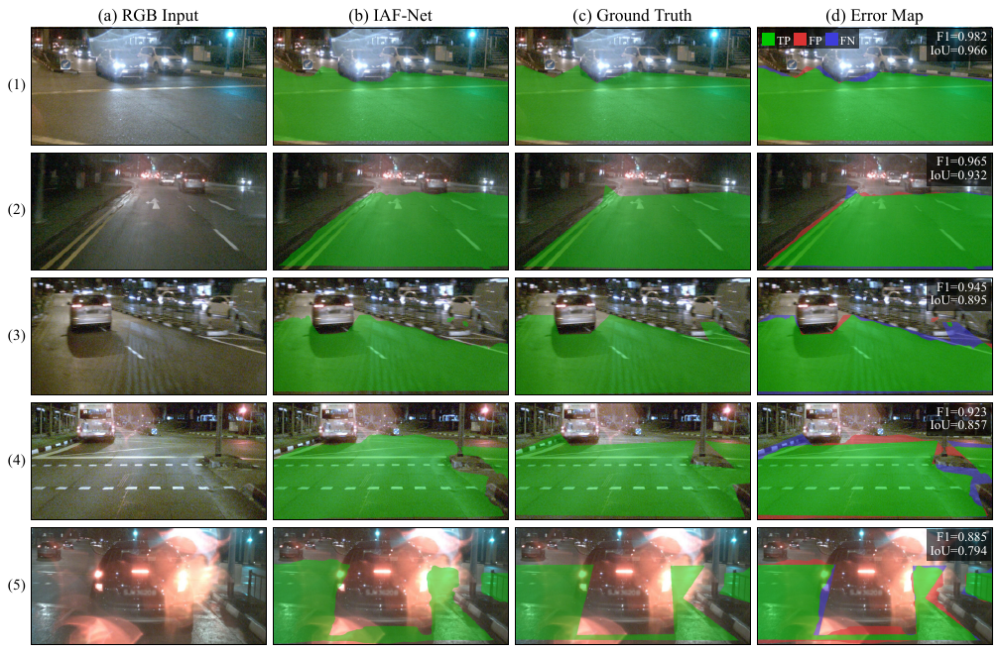

Semantic road segmentation is important for autonomous driving, but existing methods suffer severe performance degradation under low-light conditions. Many existing multi-modal fusion methods do not explicitly adapt to illumination-dependent changes in modality reliability, which can propagate degraded RGB features into the fused representation at night.
We propose IAF-Net (Illumination-Adaptive Fusion Network), an end-to-end framework with illumination-adaptive fusion for robust road segmentation across different lighting conditions. It dynamically adjusts fusion weights of RGB and geometric features via the core Illumination-Adaptive Fusion (IAF) module, and enhances low-light feature selection with a brightness-modulated attention decoder. We also construct two dedicated datasets: nuScenes Nighttime Road Segmentation (nuScenes-NRS) and CARLA Multi-Weather Road Segmentation (CARLA-MWRS). Experiments on nuScenes-NRS show state-of-the-art overall performance among the compared methods, while CARLA-MWRS further validates robustness across adverse weather conditions. Ablation studies on a 40% training subset further highlight the importance of the IAF module, which provides the largest individual gain of 0.70% in MaxF.
An illumination-aware perception pipeline that regulates how much to trust RGB versus geometry as the scene gets darker.
IAF-Net feeds a global brightness estimate through the entire perception stack — enhancement, fusion, decoding, and loss weighting — so the network adapts to varying lighting conditions end to end.
A brightness-to-weight MLP predicts per-scale fusion weights for RGB texture and surface-normal geometry, suppressing noise propagation from degraded RGB features at night while retaining texture in well-lit scenes.
Brightness-modulated attention sharpening focuses the decoder on relevant features in dark scenes and relaxes to a standard attention gate under good illumination.
nuScenes-NRS (3,182 train / 805 val, auto-labeled from LiDAR) and CARLA-MWRS (3,600 images across four weather conditions) provide real-world nighttime and synthetic multi-weather evaluation.
A dual-stream RGB-normal encoder whose fusion and decoding are both controlled by a single scene-brightness signal.

Fig. 1. Overall architecture of IAF-Net. RGB images and depth maps are processed by four core modules: LLEM for low-light enhancement and brightness estimation, R-SNE for robust surface-normal extraction, IAF for illumination-adaptive multi-scale fusion, and NAA for nighttime-aware attention decoding. An auxiliary EdgeHead sharpens boundary prediction.

Fig. 2. LLEM estimates pixel-wise enhancement-curve parameters with depth-wise separable convolutions, and outputs both the enhanced image and a global brightness value b ∈ [0, 1] that conditions every downstream module.

Fig. 3. R-SNE cleans the raw depth map (Z-score outlier rejection + bilateral filtering), computes surface normals, and weights them by a predicted per-pixel confidence map.

Fig. 4. IAF module. An MLP maps the brightness signal to fusion weights αrgb and αnorm; hierarchical attention, a heterogeneous feature contrast descriptor (HFCD), and an affinity-weighted refiner (AWFR) then fuse the two modalities per scale.

Fig. 5. NAA decoder. The attention map is sharpened by a factor s = 1 + (1 − b) × 0.5, so dark scenes get a more selective attention gate while well-lit scenes keep the standard one.
Two dedicated datasets covering real-world nighttime driving and synthetic adverse weather.
Built from nuScenes nighttime scenes. Pixel-level road masks are generated automatically from 3D LiDAR semantic annotations via projection and Delaunay triangulation — 3,182 training and 805 validation images, with no manual labeling.
Collected in the CARLA simulator across three towns (highway, urban, suburban) and four weather conditions: sunny daytime, sunny nighttime, foggy nighttime, and heavy-rain foggy nighttime. 2,400 training / 1,200 testing images.
State-of-the-art overall performance on nuScenes-NRS among compared methods, stable across CARLA weather conditions, with every module contributing.
| Method | Modality | Params (M) | MaxF (%) | IoU (%) | Precision (%) | Recall (%) |
|---|---|---|---|---|---|---|
| PIDNet-S | RGB | 7.6 | 92.43 | 85.92 | 89.83 | 95.18 |
| DAFormer | RGB | 85.2 | 92.58 | 85.66 | 92.55 | 92.00 |
| DDRNet-23 | RGB | 20.3 | 93.23 | 87.26 | 92.51 | 93.96 |
| SegFormer-B2 | RGB | 27.3 | 93.46 | 87.63 | 92.89 | 94.04 |
| SNE-RoadSegV2 | RGB+N | 73.6 | 95.54 | 91.47 | 95.17 | 95.93 |
| RoadFormer+ | RGB+N | 131.3 | 95.96 | 92.23 | 96.24 | 95.68 |
| IAF-Net (Ours) | RGB+N | 73.78 | 96.11 | 92.51 | 95.23 | 97.02 |
| Weather Condition | MaxF (%) | IoU (%) |
|---|---|---|
| Sunny Daytime | 96.74 | 93.69 |
| Sunny Nighttime | 97.18 | 94.52 |
| Foggy Nighttime | 94.19 | 88.92 |
| Heavy Rain Foggy Nighttime | 94.79 | 90.09 |
| Overall | 95.73 | 91.81 |
| Configuration | MaxF (%) | IoU (%) | Gain (Δ MaxF) |
|---|---|---|---|
| Full IAF-Net (40%) | 92.91 | 86.77 | — |
| w/o IAF | 92.21 | 85.55 | +0.70 |
| w/o NAA | 92.28 | 85.67 | +0.63 |
| w/o LLEM | 92.55 | 86.13 | +0.36 |
| w/o ALW | 92.66 | 86.32 | +0.25 |
| w/o EdgeHead | 92.70 | 86.41 | +0.21 |
| Baseline (R-SNE + backbone) | 91.62 | 84.54 | +1.29 |
Gains are measured against the full model (how much MaxF drops when a module is removed). The full model improves MaxF by 1.29% over the simplified baseline; scores are on a 40% training subset and are not directly comparable to Table I.

Fig. 6. Qualitative segmentation results on nuScenes-NRS. From left to right: input RGB image, IAF-Net prediction overlay, ground truth overlay, and error map. Green indicates true positives, red indicates false positives, and blue indicates false negatives. Residual errors concentrate near distant boundaries in very dark scenes.
If you find IAF-Net useful for your research, please cite our paper.
@article{wang2026iafnet,
title={IAF-Net: Illumination-Adaptive Fusion for Low-Light Urban Road Segmentation},
author={Wang, Bingtao and Peng, Daojie and Ma, Fulong and Ma, Jun and Zhang, Liang},
journal={IEEE Robotics and Automation Letters},
year={2026},
doi={10.1109/LRA.2026.3741777}
}